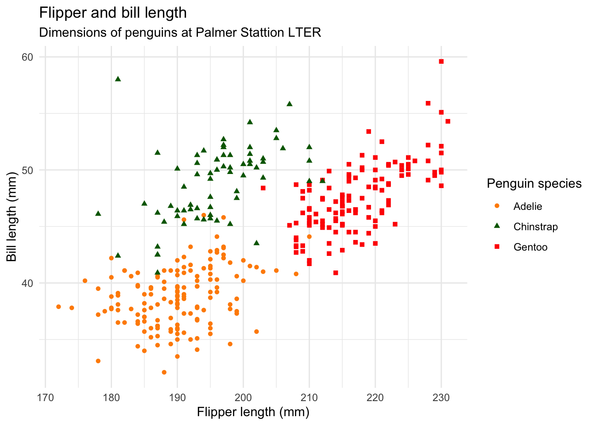

Test_quarto
Abstract
Introduction
The ability to quickly recognize a familiar face is an important adaptive skill, especially when considering the number of social interactions a typical human being (has) during its entire life. Not only person identification allow us to anticipate another person behavior but we will adapt our own response in function of the identity the person (cit.). Thus, it would not be exaggerated to stipulate that identity recognition is one of the first (earliest) essential features that shapes social interactions.
Unsurprisingly, the face recognition process has been intensively investigated over the last 50 years (citation review literature face recognition).
One key factor affecting the ability to recognize a face is level of familiarity towards the face. Familiarity, in the context of recognition memory, has been defined as the “quality or depth of encoding during a critical study context”(Akan and Benjamin 2023a).
Using a face matching paradigm, several studies have shown a clear performance advantage (i.e a higher accuracy and lower response times) when participants had to match familiar faces compared to unfamiliar ones (cit.).
The most distinctive feature for identity recognition: face. Since the 1970’s the face recognition process has been extensively investigated
One key factor affecting our ability to recognize someone is our subjective level of familiarity towards this person. - Differences between familiar versus unfamiliar Familiar and Unfamiliar face recognition: A review (Johnston & Edmonds, 2009) Internal vs external features: for unfamiliar faces, the type of features is approximately of equal importance for recognition, although advantages have been found for the external features in some studies(Bruce et al., 1999) Masking the each region had the greated detrimental effect on recognition performance compared with other face areas (Robert and Bruce, 1988). However, Burton et al. (2005) propose that what occurs as a face becomes familiar goes beyond the simple summation of encounters with a face. Encountering a face from images taken with such a range of different cameras, with a wide range of viewpoints, lighting conditions etc., enables us to eliminate the properties of the image that are not diagnostic of identity. When a face is unfamiliar, we are unable to know which characteristics or image properties will be key to representing the identity of an individual, forcing us into a primitive image-matching strategy with these faces. Distinction between a continuum of meaningfulness ranging from the unfamiliar (once viewed) face to the extremely familiar face (Rhodes, 1985) and qualitatively distinct kinds of associative coding, only some of which are available for the unfamiliar face.
Model of face recognition-perception
- Bruce and Young, 1986 Functional model of face recognition Theoretical framework for face recognition which draws together and extends recent models. Contrast recognition of people’s faces with recognition of other types of visual stimuli. Present a functional model to account for the perceptual and cognitive processes involved when people recognizing faces. Recognition of familiar faces involves structural, identity-specific semantic and name codes. Minor role are pictorial, expression and facial speech codes. A face can be recognized as familiar when there is a match between its encoded representation and a stored structural code. Bruce and Young ephasized a distinction between processes involved in the recognition of identity and the recognition of expression and speech-related movements of the mouth. The anatomical organization of face-responsive regions in extrastriate vosual cortex provides a substrate that embodies this cognitive distinction.
Model: Functional components in the human face processing system:
- Haxby et al. (2000) model of face perception: distributed human neural system for face perception
- Core system, exastriate visual cortex: visual analysis of faces
- Extended system: further processing of the meaning of information gleaned from faces (regions parts of neural systems for other cognitive functions) Anterior temporal lobe (personal identity, name, biographical information): high functional connectivity with hippocampal formation (declarative memory). A model of the distributed human neural system for face perception (Haxby et al., 2000). The model is divided into a core system for the visual analysis of faces, which consists of three regions of occipitotemporal visual extrastriate cortex, and an extended system for further processing of the meaning of information gleaned from faces, which consists of regions that are also part of neural systems for other cognitive functions. Changeable and invariant aspects of the visual facial configuration have distinct representations in the core system. Interactions between these representations in the core system and regions in the extended system meditate processing of the spatial focus of another’s attention, speech-related mouth movements, facial expression, and identity. processing the emotional content of a face and the evocation of an emotional reponse to a face can be based on changeable aspects of the face, such as expression and eye gaze, or on identity and knowledge of the person being viewed.
Perception of identity and retrieval of semantic knowledge about people: a novel face is perceived as a unique individual even when one has no other knowledge of that person, and this perception of the unique identity of a face appears to be associated with activity in lateral fusiform gyrus (George et al., 1999; Hoffman and Haxby, 2000; Sergent et al, 1992). The recognition of a familiar face appears to involve a fixed sequence of stages in which the retrieval of semantic information about a person precedes the retrieval of that person’s name (Ellis, 1992). Recognition of familiar faces appears to be associated with activity in anterior temporal regions (Gorno Tempini et al 1988; Leveroni et al 2000; Nakamura et al 2000; Sergent et al 1992), especially the anterior temporal gyrus. Activity in this region is allso elicited by the perception of the names of famous people and by the perception of familiar outdoor scenes (Gorno Temponi et al., 1998; Nakamura et al., 2000), suggesting that this region may be associated with the representation of biographical knowledge (CC.)
Common point regarding face recognition: comparion between
- Issues/Gap: Face matching task: familiar faces are recognized faster and more precisely than unfamiliar or new faces. Real world: not a face matching task. See a face, recognize or not. Recognition memory (face memory task). In this case, the clear advantage from familiarity is not as evident. Several studies found advantage (ref) while others found no advantage or even a disadvantage (ref). Unfamiliar (learned faces) vs highly familiar vs new faces: 3 different levels of familiarity. Look at effect of familiarity cognition behind this face recognition process using evidence-accumulation approach. Advantage: combination/translation of RT and accuracy into latent variables assumed to underlie the decision-making process (not just faster, better, but why?) /
Limitations/Gap/Issues:
Evidence accumulation models
- Definition: model describing two-forced choice accumulation of evidence. Evidence-accumulation models: most successful frameworks used to account for human decision-making (Donkin & Brown, 2018). Idea as measurements tools: translation of RT and accuracy into latent variables assumed to underlie the decision-making process. Application (aging literature, covert attention, perceptual discrimination tasks…). Success within cognitive psychology, last years few attempts to use them to answer questions related to human social cognition (Parker & Ramsey, 2023).
- Linear Ballistic Model (LBA): race model, When someone is faced between two options, evidence accumulate in favor of these two options at a different speed (two distinct accumulators).
Hypotheses
Experiment 1
2. Materials and Methods
We report how we determined our sample size, all data exclusions (if any), all manipulations, and all measures in the study.
Pre-registration and open science
For both experiments 1 and 2, the research question, hypotheses, experimental design, planned analysis, and exclusion criteria were preregistered (for Experiment 1: ; for Experiment 2:). All raw data, stimuli, data wrangling and analysis code are avialble on the open science framework (see link). We did not deviated from our preregistered experimental plan.
Participants
We tested 31 healthy participants through blablabla (number of females, between the ages of blablabla). All participants reported normal or corrected-to-normal vision and received payment (20 CHF) for participating in the experiment. One participant was excluded from the data analysis (blablabla). This experiment was accepted by the ethics committee of the Federal Institute of Technology Zurich (ETHZ), and all participant gave their informed consent to participate in the study. Sample size was determined in advance…
Stimuli
The stimuli consisted of images selected from two different data sets of face images: the Face Research Lab London Set (DeBruine, Lisa; Jones, Benedict (2017). Face Research Lab London Set. figshare. Data set. https://doi.org/10.6084/m9.figshare.5047666.v5) and the (other datas et). Each of these data sets is composed of images of different identities faces taken from different angle points. (X) identities were selected from the Face Research Lab London Set and (X) from the . For each selected identity, three pictures of the face at three different view points (3/4 left view, frontal view and 3/4 right view) were cropped to remove any (Fig. 1). All of the images processing was realized using the GNU Image Manipulation Program (GIMP, ref). After 4 pilots experiments, we removed 27 identities (21 from the Face Research Lab London Set and 6 from the blablabla) due to to the presence of (blablabla). In total, the data set of face images used in the main experiment contained 756 images: one set of three colorful face images and one set of three gray scaled face images for each of the 126 identities.
Material
Stimuli were presented on the screen of MacBook (blabla). The experiment was run on Psychopy Coder (version: 2022.5, ref).
Procedure
The experimental task was divided into two distinct parts: a familiarization part and a recognition part (Fig.2). In the familiarization part, the face of 30 unknown identities were presented on the screen and participants were told to memorize the identity of the faces. One familiarization trial consisted of the presentation of 6 face images, one after the other, depicting the same identity but varying the view points (3/4 left view, frontal view and 3/4 right view) and the colorimetry (colorful image, gray scale image). The duration of each image presentation was 0.75 second. Each participant underwent 30 familiarization trials. The faces seen during the familiarization were considered the “Learned faces” condition. In the recognition part, participants completed three blocks of 90 recognition trials. Each block was separated from another by a short break. Half of the trials were learned identities trials and the other half were new, previously unseen identities trials. At each trial, a gray scale image of a face was shown on the screen. Participants were asked to choose if they had previously seen this face in the familiarization part or not. If they did, the should press the “q” key and if they did not, the “p” key. Response time [s] and accuracy were collected after each trial. During the familiarization, we introduced catch trials to ensure participants attention. After some familiarization trials, a gray scale image of a person’s face was presented on the screen. Participants were asked to press the “q” key if the face belonged to the last seen identity or the “p” key if it was not.
Data analysis
Following our preregistration, trials with a response time longer than 2.5s were removed from the analysis. The evidence-accumulation modelling analyses of the distribution of response times for the correct and wrong answers were realized using the EMC2 R package (Cit. Niek Stevenson). For the separate analysis of response times and accuracy, we used (blablabla).
3. Results
Analysis of observed variables
Prior to the evidence accumulation modeling analysis, we separately analyzed RT and accuracy as they were the variables directly measured in our task.
Evidence accumulation modelling
Model specification
4. Discussion
Experiment 2
2. Materials and Methods
Participants
We tested 33 healthy participants through blablabla (number of females, between the ages of blablabla). All participants reported normal or corrected-to-normal vision and received payment (25 CHF) for participating in the experiment. Based on our preregistration criterion, 3 participants were excluded from the data analysi: 1 of them had an overall recognition accuracy larger than 95% and 2 of them had a overall accuracy lower than 55% (chance at 50%). This experiment was accepted by the ethics committee of the Federal Institute of Technology Zurich (ETHZ), and all participant gave their informed consent to participate in the study. Sample size was determined in advance…
Stimuli
Two types of pictures were used for this experiment to create our within-subject stimuli conditions. Pictures depicting celebrities were taken from the internet The stimuli consisted of images selected from two different data sets of face images: the Face Research Lab London Set (DeBruine, Lisa; Jones, Benedict (2017). Face Research Lab London Set. figshare. Data set. https://doi.org/10.6084/m9.figshare.5047666.v5) and the (other datas et). Each of these data sets is composed of images of different identities faces taken from different angle points. (X) identities were selected from the Face Research Lab London Set and (X) from the . For each selected identity, three pictures of the face at three different view points (3/4 left view, frontal view and 3/4 right view) were cropped to remove any (Fig. 1). All of the images processing was realized using the GNU Image Manipulation Program (GIMP, ref). After 4 pilots experiments, we removed 27 identities (21 from the Face Research Lab London Set and 6 from the blablabla) due to to the presence of (blablabla). In total, the data set of face images used in the main experiment contained 756 images: one set of three colorful face images and one set of three gray scaled face images for each of the 126 identities.
Material
Stimuli were presented on the screen of MacBook (blabla). The experiment was run on Psychopy Coder (version: 2022.5, ref).
Procedure
The experimental task was divided into two distinct parts: a rating part and a recognition part (Fig.2). During the rating part, participants were presented pictures of 60 celebrities. They were asked to rate these celebrities, based on two dimensions: how familiar the celebrity was to them and how positive or negative were their feelings towards the celebrity. The familiarity rating scale used went from 0 (Highly unfamiliar) to 10 (Highly familiar). and were asked to rate the , based on two dimensions: the level of familiarity of In the recognition part, participants completed three blocks of 90 recognition trials. Each block was separated from another by a short break. Half of the trials were famous identities trials and the other half were new, previously unseen identities trials. At each trial, a gray scale image of a face was shown on the screen. Participants were asked to choose if they recognize the face (and not the picture) seen this face in the familiarization part or not. If they did, the should press the “q” key and if they did not, the “p” key. Response time [s] and accuracy were collected after each trial.
Data analysis
Following our preregistration, trials with a response time longer than 2.5s were removed from the analysis. The evidence-accumulation modelling analyses of the distribution of response times for the correct and wrong answers were realized using the EMC2 R package (Cit. Niek Stevenson). For the separate analysis of response times and accuracy, we used (blablabla).
3. Results
Analysis of observed variables
Prior to the evidence accumulation modeling analysis, we separately analyzed RT and accuracy as they were the variables directly measured in our task.
Evidence accumulation modelling
Model specification
4. Discussion
General discussion
Let’s plot the palmerpenguins data.
Testing Equations
\[ price = \hat{\beta}_0 + \hat{\beta}_1 \times area + \epsilon \]
Citations
We are going to use (Akan and Benjamin 2023b) to analyse the data.
References
Akan, Melisa, and Aaron S. Benjamin. 2023b. “Haven’t I Seen You Before? Conceptual but Not Perceptual Prior Familiarity Enhances Face Recognition Memory.” Journal of Memory and Language 131 (August): 104433. https://doi.org/10.1016/j.jml.2023.104433.
———. 2023a. “Haven’t I Seen You Before? Conceptual but Not Perceptual Prior Familiarity Enhances Face Recognition Memory.” Journal of Memory and Language 131 (August): 104433. https://doi.org/10.1016/j.jml.2023.104433.